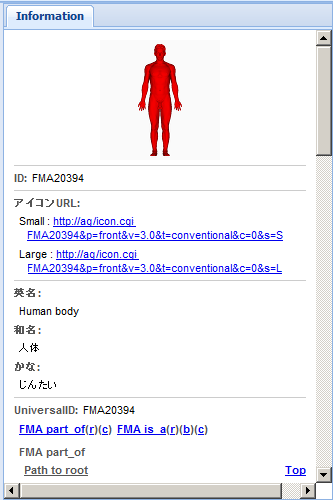

UI各部の名称と機能 > BP3DViewerタブ > Informationパネル
BP3DViewerタブのInformationパネルには、メインパネルで選択されているパーツに関する下記の項目が記載されています。

- ID：該当パーツのID
- アイコンURL
- Small：大きいアイコンの固定URL
- Large：小さいアイコンの固定URL
- 英名：英語の名称
- 和名：日本語の名称
- かな：日本語の名称のよみがな
- UniversalID：ID
- FMA part_of：FMAのpart_ofに関する情報
- Path to root：FMAのpart_ofでrootに達するためのパス
- Brother：FMAのpart_ofでbrotherに該当するもの
- Children：FMAのpart_ofでchildrenに該当するもの
- FMA is_a：FMAのis_aに関する情報
- Path to root：FMAのis_aでrootに達するためのパス
- Brother：FMAのis_aでbrotherに該当するもの
- Children：FMAのis_aでchildrenに該当するもの
- BodyParts3D Information：パーツに関する情報
- Xmin：X座標最小値
- Xmax：X座標最大値
- Ymin：Y座標最小値
- Ymax：Y座標最大値
- Zmin：Z座標最小値
- Zmax：Z座標最大値
- LastUpdate：最終更新日
- Physical：material / immaterial
- 更新日時：該当パーツデータの最終更新日